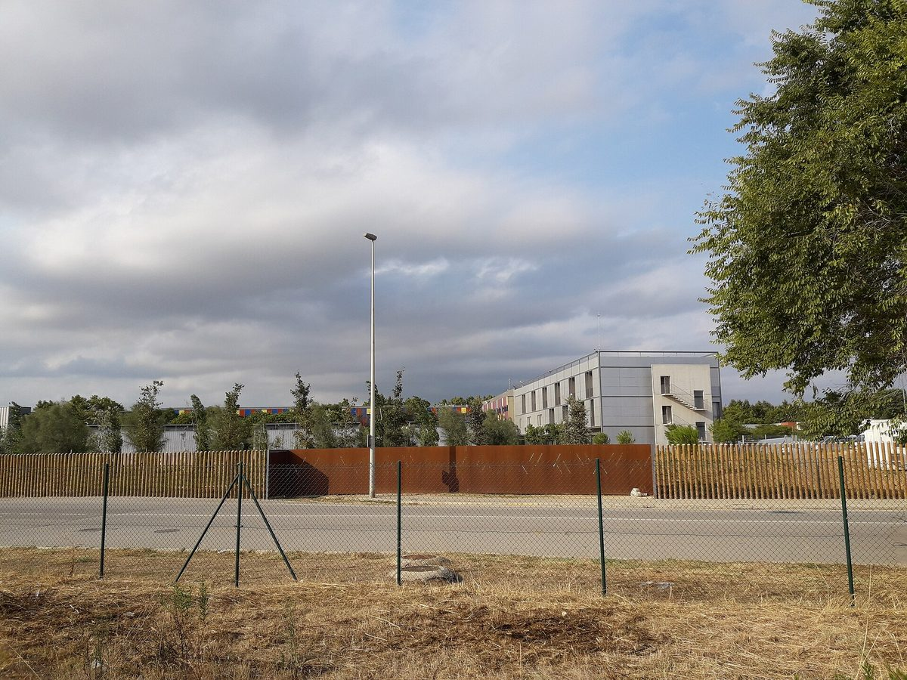

스페인 엘프라트 '시민 에너지 공동체', 공유 태양광 지붕 4곳에서 19곳 1MW로 늘려…낮 시간 1,500가구분, 요금은 판매사보다 50% 낮게

시청 40%·지역 기업 40%·사용자 협회 20%가 지분 나눈 비영리 법인…지붕·투자 없이 가입만으로 참여, 밤 공급 위한 공동 배터리는 규제에 막혀 시범 단계
스페인 카탈루냐 엘프라트데요브레가트(El Prat de Llobregat)의 '시민 에너지 공동체 에네르지아 델 프라트(Energia del Prat)'가 공동 태양광 지붕을 4곳에서 19곳으로 늘려 1MW(1,000kWp) 규모를 갖추고, 10월 29일 망 설비 하나가 있는 하우메 발메스 학교 옥상에서 참여 확대 캠페인을 시작했다. 공동체 측은 이 설비로 약 1,500가구 또는 약 150개 상점의 낮 시간 전력 수요를 햇빛 전기로 채울 수 있다고 밝혔으며, 이 규모를 들어 카탈루냐에서 주거용 사용자 중심으로는 가장 큰 시민 공동체라고 주장했다. 2023년 '주관적 영리 목적이 없는 유한회사'로 세워진 이 법인은 엘프라트 시청이 40%, 푼데스플라이(Fundesplai)·그루프 에스테베(Grup Esteve)·노동자 주택협동조합 등 기업들이 40%, 사용자 전원이 속한 시민 협회가 20%를 갖고 있다. 주민과 상인은 자기 지붕이나 공사·투자 없이 공동체에 가입해 망 안의 지붕 설비 하나에 연결되는 '공유 자가소비' 방식으로 전기를 받고, 이사회는 요금을 전기 판매사보다 50% 낮게 정했다. 지금까지는 설비에 투자만 해 수입이 없어 창립 기업과 시청 출연으로 운영해 왔으며, 내년부터 사용자가 늘면 요금 청구를 본격화하고 이익이 나면 비영리 정관에 따라 사업에 다시 투자할 계획이다. 밤 공급에 필요한 공동 배터리는 현행 법 틀에 막혀 정부 시험 사업 안에서 시범 중이며, 조르디 시모(Jordi Simó) 부국장은 "큰 도약을 할 준비가 됐다"고 말했다.
시민에너지 관점
시청 40%, 지역 기업 40%, 주민 사용자 20%로 지분을 나눈 엘프라트의 법인은 공공이 지붕과 초기 자금을 대고 지역 기업과 협동조합이 함께 출자하며 주민이 지분 몫을 갖는 구조가 지붕 4곳에서 19곳, 1MW까지 자랄 수 있음을 보여 준다. 몇 해 동안 수입 없이 출연금으로 버틴 사업이 오래갈 수 있느냐는 우려가 나올 수 있지만, 이 법인은 이익을 나눠 갖지 않고 사업에 다시 넣도록 정관에 묶어 두었고 그 대신 사용자에게 판매사보다 50% 낮은 요금을 약속했다. 지붕이 없는 세입자와 상인도 가입만으로 같은 값의 햇빛 전기를 쓰게 한 점에서, 주민이 지분을 가진 공동체는 태양광의 혜택을 지붕 가진 사람에게서 동네 전체로 넓힌다. 국내 지자체도 공공건물 지붕을 개별 사업자에게 빌려주는 데서 멈추지 말고, 지자체·사회적경제 조직·주민이 지분을 나눠 갖는 지역 에너지 법인을 세워 지붕 없는 주민부터 가입시키는 길을 열어야 한다.
출처: El Periódico 2026-10-29 Àlex Rebollo 원문 보기
スペイン・エル・プラットの「市民エネルギー共同体」、共有太陽光の屋根を4カ所から19カ所・1MWに拡大…昼間1,500世帯分、料金は小売事業者より50%安く
市役所40%・地元企業40%・利用者協会20%が出資を分け合う非営利法人…屋根も投資もなしに加入だけで参加、夜間供給のための共同蓄電池は規制に阻まれ試験段階
スペイン・カタルーニャ州エル・プラット・デ・ジョブレガート（El Prat de Llobregat）の「市民エネルギー共同体エネルジア・デル・プラット（Energia del Prat）」が、共同の太陽光屋根を4カ所から19カ所に増やして1MW（1,000kWp）の規模を整え、10月29日、設備の一つがあるジャウマ・バルメス学校の屋上で参加拡大キャンペーンを始めた。共同体側は、この設備で約1,500世帯または約150店舗の昼間の電力需要を太陽光でまかなえると説明し、この規模を根拠に、住宅利用者を中心とする市民共同体としてはカタルーニャ最大だと主張した。2023年に「主観的な営利目的を持たない有限会社」として設立されたこの法人は、エル・プラット市役所が40%、フンデスプライ（Fundesplai）、グルップ・エステベ（Grup Esteve）、労働者住宅協同組合などの企業が40%、利用者全員が加わる市民協会が20%を保有している。住民や商店は自分の屋根も工事も投資もなしに共同体に加入し、ネットワーク内の屋根設備の一つにつながる「共有自家消費」方式で電気を受け、理事会は料金を電力小売事業者より50%低く定めた。これまでは設備への投資だけで収入がなく、創設企業と市役所の拠出で運営してきたが、来年から利用者が増えれば料金請求を本格化し、利益が出れば非営利の定款に従って事業に再投資する計画だ。夜間供給に必要な共同蓄電池は現行の法制度に阻まれ、政府の試験事業の中で試行中であり、ジョルディ・シモ（Jordi Simó）副代表は「大きく飛躍する準備が整った」と語った。
市民エネルギーの視点
市役所40%、地元企業40%、住民利用者20%で出資を分け合うエル・プラットの法人は、公共が屋根と初期資金を出し、地元企業や協同組合が共に出資し、住民が持ち分を持つ構造が、屋根4カ所から19カ所、1MWにまで育ちうることを示している。数年間収入のないまま拠出金で持ちこたえた事業が長続きするのかという懸念もありうるが、この法人は利益を分配せず事業に再投資するよう定款で定め、その代わりに利用者へ小売事業者より50%安い料金を約束した。屋根を持たない借家人や商店も加入するだけで同じ価格の太陽光電気を使えるようにした点で、住民が持ち分を持つ共同体は、太陽光の恩恵を屋根の持ち主から地域全体へと広げる。韓国の自治体も公共施設の屋根を個別の事業者に貸すだけで終わらせず、自治体・社会的経済組織・住民が出資を分け合う地域エネルギー法人を設立し、屋根のない住民から加入できる道を開くべきだ。
出典: エル・ペリオディコ（El Periódico） 2026-10-29 アレックス・レボリョ（Àlex Rebollo） 原文を読む
西班牙埃尔普拉特"市民能源共同体"将共享光伏屋顶从4处扩至19处、达1MW…可满足1,500户白天用电，电价比售电公司低50%
市政府40%、本地企业40%、用户协会20%分持股份的非营利法人…无需屋顶和投资、加入即可参与，夜间供电所需的共享电池受法规限制仍处试点阶段
西班牙加泰罗尼亚埃尔普拉特德略布雷加特（El Prat de Llobregat）的"市民能源共同体Energia del Prat"把共享光伏屋顶从4处增加到19处，规模达到1MW（1,000kWp），并于10月29日在设有其中一套设施的Jaume Balmes学校屋顶启动扩大参与的宣传活动。共同体方面表示，这些设施可以用太阳能满足约1,500户家庭或约150家商店白天的用电需求，并据此称其为加泰罗尼亚以住宅用户为主的最大市民共同体。该法人于2023年以"无主观营利目的的有限责任公司"形式成立，埃尔普拉特市政府持有40%，Fundesplai、Grup Esteve和工人住房合作社等企业持有40%，由全体用户组成的市民协会持有20%。居民和商户无需自有屋顶，也无需施工和投资，只要加入共同体、接入网络内的某处屋顶设施，就能以"共享自发自用"方式用电，理事会把电价定为比售电公司低50%。迄今为止该法人只投资建设设施、没有收入，靠创始企业和市政府的出资运营；计划从明年起随着用户增加正式收取电费，如有盈利，将按照非营利章程再投入到事业中。夜间供电所需的共享电池受现行法律框架限制，目前在政府试验项目中试点，副主任Jordi Simó表示："我们已经准备好实现一次大的飞跃。"
市民能源视角
埃尔普拉特这一由市政府40%、本地企业40%、居民用户20%分持股份的法人表明，由公共部门提供屋顶和启动资金、本地企业和合作社共同出资、居民持有股份的结构，可以从4处屋顶成长到19处、1MW。有人可能担心，靠出资撑了几年、没有收入的事业能否持久，但该法人在章程中规定利润不分配而是再投入事业，作为回报向用户承诺比售电公司低50%的电价。没有屋顶的租户和商户只要加入就能用上同样价格的太阳能电力，从这一点看，居民持股的共同体把光伏的好处从有屋顶的人扩大到整个社区。韩国的地方政府也不应止步于把公共建筑屋顶租给个别企业，而应成立由地方政府、社会经济组织和居民分持股份的地方能源法人，先让没有屋顶的居民加入。
来源: 《El Periódico》 2026-10-29 Àlex Rebollo 查看原文
El Prat's citizen energy community in Spain grows from 4 to 19 shared solar roofs and 1MW, enough for 1,500 households in daytime, at prices 50% below retailers
A not-for-profit company owned 40% by the city council, 40% by local organisations and 20% by a users' association; residents join without a roof or investment, while shared batteries for night-time supply are held back by regulation and still in a pilot
Energia del Prat, the citizen energy community of El Prat de Llobregat in Catalonia, Spain, has expanded its shared solar roofs from 4 to 19, reaching 1MW (1,000kWp), and on 29 October launched a campaign to bring in more members on the roof of the Jaume Balmes school, which hosts one of its installations. The community says the network can cover the daytime electricity needs of about 1,500 households or about 150 shops, and on that basis claims to be the largest citizen community in Catalonia focused on residential users. Set up in 2023 as a limited company without a subjective profit motive, it is owned 40% by El Prat city council, 40% by organisations including Fundesplai, Grup Esteve and a workers' housing co-operative, and 20% by a citizens' association made up of all its users. Residents and shopkeepers need no roof, building work or investment of their own: they join the community and are connected to one of the roof installations under a shared self-consumption scheme, and the board has set prices 50% below those of electricity retailers. So far the company has only invested in building its installations and has had no income, running on contributions from its founding members and the council; from next year it plans to bill in earnest as users grow, and any profit must be reinvested in the project under its not-for-profit statutes. Shared batteries for night-time supply are held back by the current legal framework and are being tested within a government pilot, while deputy director Jordi Simó said the community was "ready to take a big leap."
Citizen Energy View
El Prat's company, split 40% city council, 40% local organisations and 20% resident users, shows that a structure in which the public sector provides roofs and seed money, local companies and co-operatives invest alongside it and residents hold a share can grow from 4 roofs to 19 and 1MW. Some may doubt whether a venture that has survived for years on contributions without income can last, but its statutes bar the distribution of profit and require reinvestment, and in return users are promised prices 50% below retailers. By letting tenants and shopkeepers without a roof use solar power at the same price simply by joining, a community in which residents hold shares spreads the benefits of solar from roof owners to the whole neighbourhood. Korean local governments, too, should go beyond leasing public roofs to individual companies and set up local energy companies jointly owned by the municipality, social-economy organisations and residents, starting with residents who have no roof of their own.
Source: El Periódico 2026-10-29 Àlex Rebollo Read the original